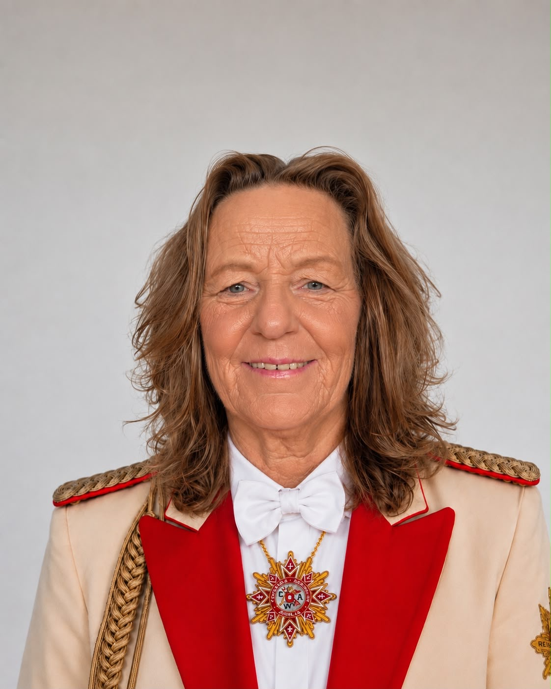
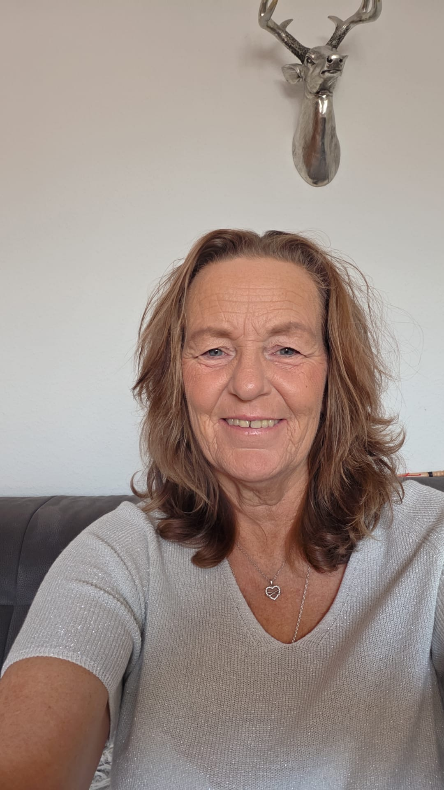
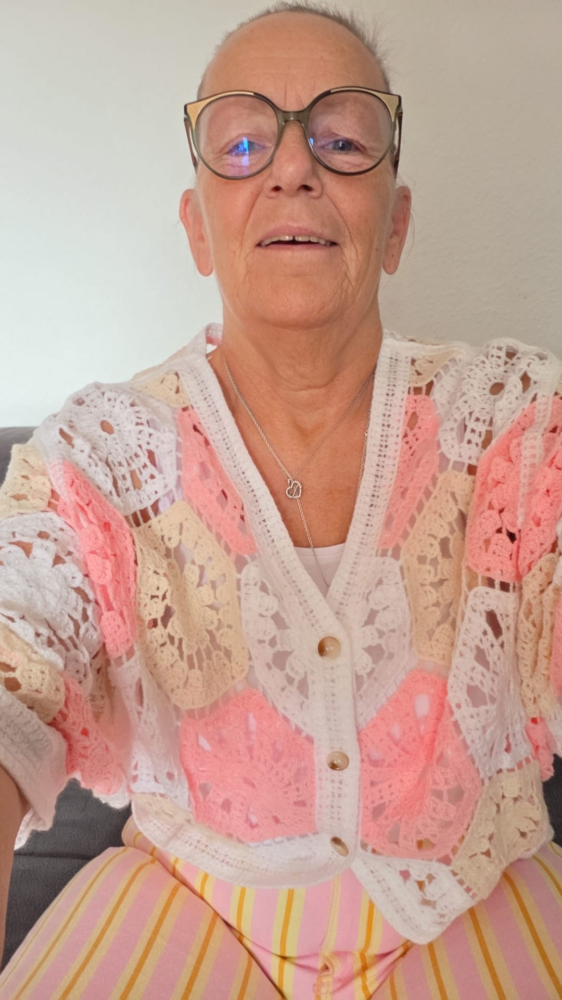

Anke Quinders
„Mein Herz geht auf, wenn Karneval ist.“
Karneval begleitet Anke schon seit ihrer Kindheit. Heute packt sie im CAW überall dort mit an, wo Hilfe gebraucht wird – und steht zugleich vor einer ganz besonderen Session.
Anpacken, unterstützen, gemeinsam gestalten
Als 1. Beisitzerin übernimmt Anke Aufgaben, die im Verein anfallen, und entlastet damit den Vorstand. Sie ist dort zur Stelle, wo Unterstützung gebraucht wird.
„Die Männer im Zaum halten!“ – natürlich mit einem Augenzwinkern.
„Es ist die schönste und friedlichste Zeit im Jahr.“
Anke über den Weseler Karneval.Wenn alle Augen strahlen
Schon als kleines Kind stand Anke am Zug. Richtig aktiv ist sie seit rund einem Jahr. Für sie bedeutet Karneval Spaß, Gemeinschaft und die Freude daran, Menschen glücklich zu sehen.
Besonders berühren sie die strahlenden Augen – egal ob bei Kindern, Erwachsenen, Jung oder Alt. Jeder feiert mit jedem. Und dass so viele Vereine gemeinsam dafür sorgen, dass der Karneval weiterlebt, macht diese Zeit für sie besonders.

Der Moment, den sie nie vergessen wird
Ankes bislang schönster Karnevalsmoment war der Augenblick, in dem sie erfahren hat, dass sie Prinzessin der Stadt Wesel wird.
„Als ich erfahren habe, dass ich Prinzessin werde – dank meinem Basti. ❤️“1. Beisitzerin heute. Prinzessin Anke I. in der Session 2026/27.
Zwei Seiten – eine Anke
Wer Anke nur in ihrer CAW-Uniform kennt, kennt eben nur eine Seite von ihr. Hinter Amt, Orden und Karneval steckt eine Frau, die herzlich ist, gerne lacht und auch über sich selbst lachen kann.

Nur zusammen sind wir stark
„Ich wünsche mir, dass wir es schaffen, wieder alle Vereine zusammenzubringen und neues Vertrauen entstehen zu lassen. Denn wir sind gemeinsam Karneval. Nicht einer alleine, sondern alle zusammen – nur zusammen sind wir stark.“← Zurück zum Vorstand